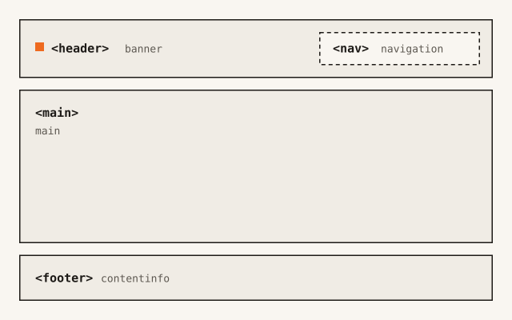

Bilder
Das Element <img> bindet eine Bilddatei ein. Der Alt-Text ersetzt das Bild, die Attribute width und height reservieren seine Fläche.
Demo

Code
<figure>
<img src="../assets/img/landmarks.svg" alt="Schema einer Seite: oben der Header mit der Navigation, darunter der Hauptinhalt, unten der Footer" width="640" height="400">
<figcaption>Die vier Landmarks einer Seite der Toolbox</figcaption>
</figure>Warum
Eine Bilddatei lädt nach dem HTML, und nicht jede Person sieht sie. Der Pfad kann falsch sein, die Verbindung langsam, oder ein Screenreader liest die Seite vor. Das Attribut alt enthält für diese Fälle den Text, der das Bild ersetzt.
Aus width und height berechnet der Browser das Seitenverhältnis, bevor die Datei geladen ist. Er reserviert die Fläche des Bildes. Der folgende Inhalt verschiebt sich beim Laden deshalb nicht (Layout Shift). Die Werte nennen die Größe der Datei in Pixeln. Die dargestellte Größe legt das Stylesheet fest.
<figure> verbindet das Bild mit einer Caption im Element <figcaption>. Die Caption ist für alle sichtbar und ergänzt das Bild. Der Alt-Text ersetzt es.
Barrierefreiheit
- Ein informatives Bild erhält einen Alt-Text, der seine Aussage nennt. Die Wörter „Bild von“ entfallen: Die Rolle
imagesagt der Screenreader an. - Ein dekoratives Bild erhält
alt="". Es fehlt dann im Accessibility Tree. - Ohne das Attribut
althat das Bild keinen Namen. Der Validator meldet das als Fehler. - Ist ein Bild der einzige Inhalt eines Links, nennt der Alt-Text das Ziel des Links. Mit
alt=""hat der Link keinen Namen. - Text in einem Bild ist für Screenreader nicht lesbar. Er steht zusätzlich im Alt-Text oder im Text der Seite.